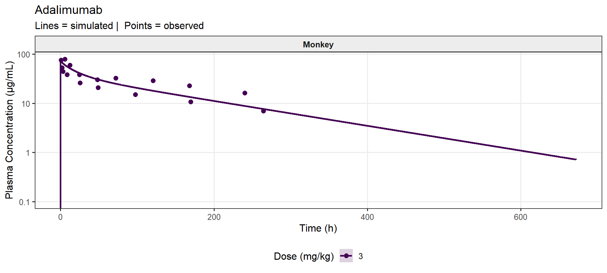
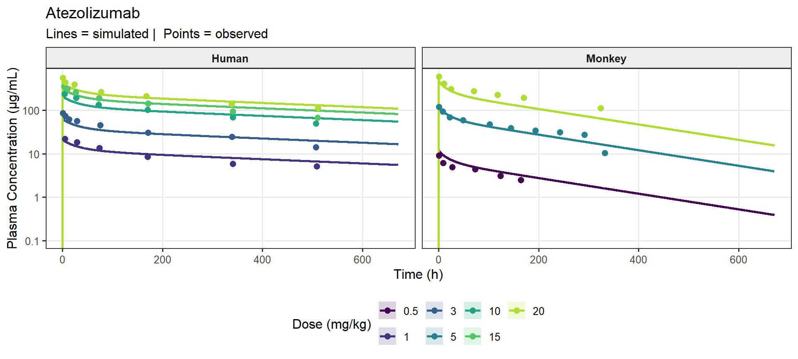
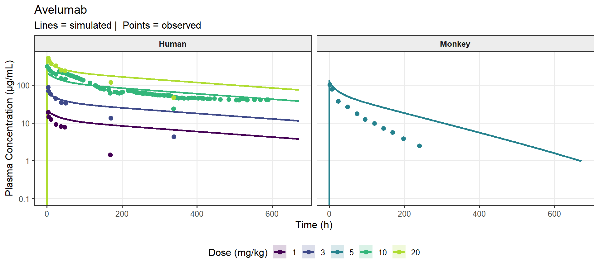
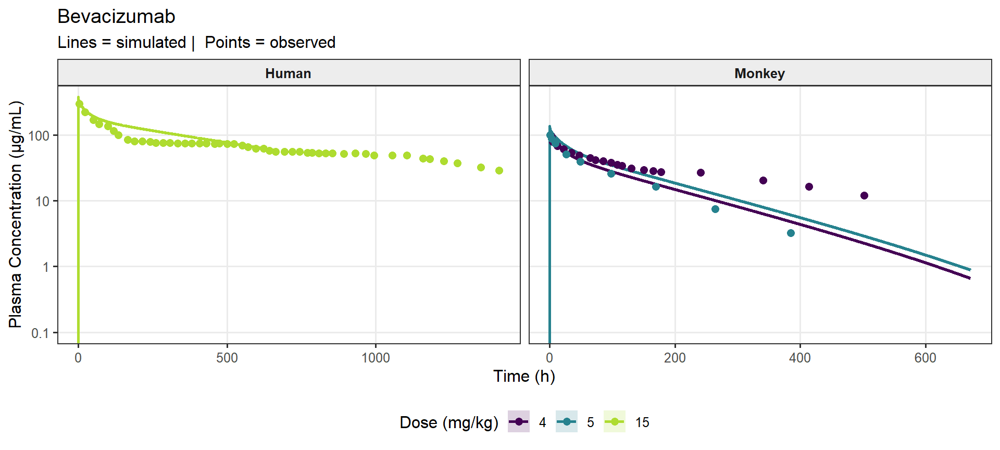
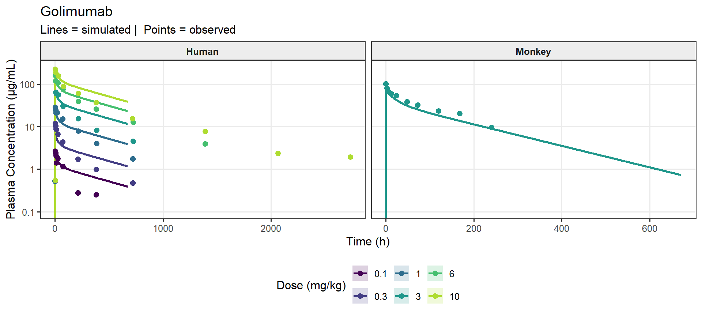
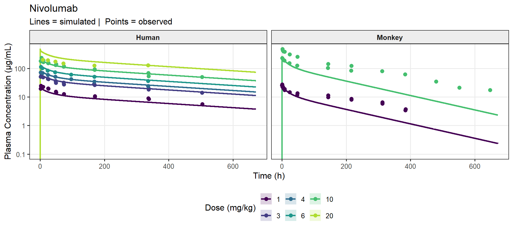
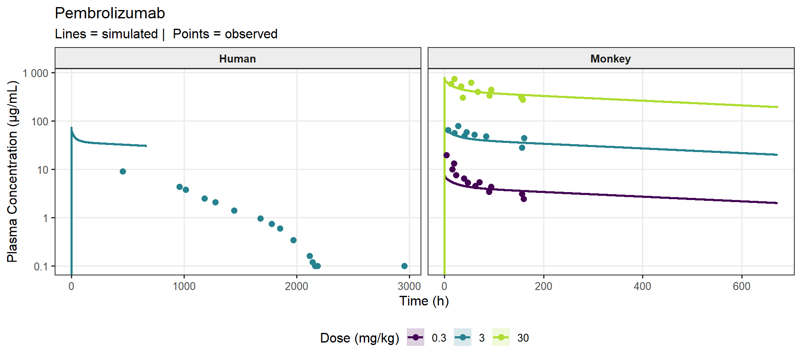
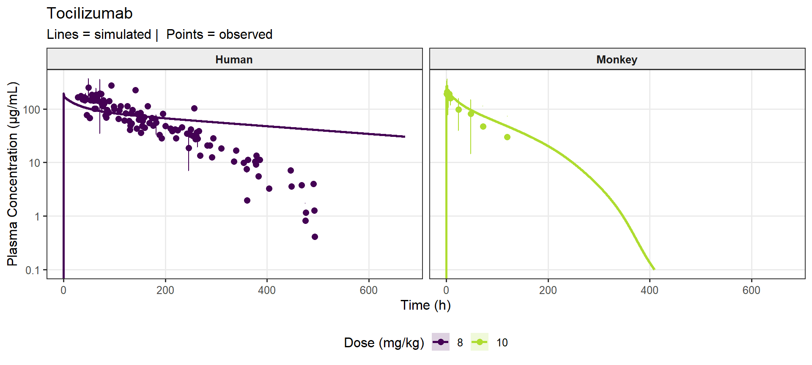

rm(list = ls())
library(tidyverse)
library(data.table) # fast I/O (fread) and fast grouped operations
library(scales)
library(knitr)
library(openxlsx)
library(kableExtra)
# Helper functions -------------------------------------------------------------
# Keep all local helpers here so this script is stand-alone and does not depend
# on 00_functions.R.
normalize_species <- function(x) {
dplyr::case_when(
tolower(x) == "human" ~ "Human",
tolower(x) %in% c("nhp", "monkey", "primate") ~ "Monkey",
tolower(x) == "rat" ~ "Rat",
tolower(x) == "mouse" ~ "Mouse",
tolower(x) == "dog" ~ "Dog",
TRUE ~ stringr::str_to_title(x)
)
}
parse_scenario <- function(path) {
base <- tools::file_path_sans_ext(basename(path))
base <- sub("_mpk$", "", base)
parts <- strsplit(base, "_")[[1]]
n <- length(parts)
list(
Molecule = paste(parts[seq_len(n - 2)], collapse = "_"),
Species = parts[n - 1],
Dose = suppressWarnings(as.numeric(parts[n]))
)
}
trapz_auc <- function(time, conc, t_end = Inf) {
keep <- !is.na(time) & !is.na(conc) & conc > 0 & time <= t_end
t <- time[keep]
c <- conc[keep]
if (length(t) < 2) return(NA_real_)
dt <- diff(t)
c1 <- c[-length(c)]
c2 <- c[-1]
# Use log trapezoid on strictly declining segments; linear elsewhere.
use_log <- c1 != c2 & c1 > 0 & c2 > 0
trap <- ifelse(
use_log,
dt * (c1 - c2) / log(c1 / c2),
dt * (c1 + c2) / 2
)
sum(trap)
}
fmt_fe <- function(x) {
cell_spec(
formatC(x, format = "f", digits = 2),
background = ifelse(!is.na(x) & x >= 0.5 & x <= 2.0, "#d4edda", "#f8d7da"),
color = ifelse(!is.na(x) & x >= 0.5 & x <= 2.0, "#155724", "#721c24"),
bold = TRUE
)
}
render_metrics_kbl <- function(df, caption) {
df_fmt <- df %>%
mutate(
`Obs Cmax (µg/mL)` = round(Obs_Cmax, 1),
`Pred Cmax (µg/mL)` = round(Pred_Cmax, 1),
`FE Cmax` = map_chr(FE_Cmax, fmt_fe),
`Obs AUC (µg·h/mL)` = round(Obs_AUC, 0),
`Pred AUC (µg·h/mL)` = round(Pred_AUC, 0),
`FE AUC` = map_chr(FE_AUC, fmt_fe)
) %>%
select(
Molecule, `Dose (mg/kg)` = Dose,
`Obs Cmax (µg/mL)`, `Pred Cmax (µg/mL)`, `FE Cmax`,
`Obs AUC (µg·h/mL)`, `Pred AUC (µg·h/mL)`, `FE AUC`
)
df_fmt %>%
kbl(
escape = FALSE,
align = c("l", "r", "r", "r", "c", "r", "r", "c"),
caption = caption
) %>%
kable_styling(
bootstrap_options = c("striped", "hover", "condensed"),
full_width = FALSE,
font_size = 13
) %>%
column_spec(5, width = "5em") %>%
column_spec(8, width = "5em") %>%
pack_rows(index = setNames(
rle(df$Molecule)$lengths,
rle(df$Molecule)$values
))
}
datadir <- "../../../01_Data/"
results_dir <- "../SimsOutputs/SimulationResults/"
figures_dir <- "../SimsOutputs/Figures"
# AUC integration window: 28 days in hours
AUC_END_H <- 28 * 24 # 672 hProcess Simulation Outputs
Set up
Load data
Observed data
obs_raw <- read.csv(
file.path(datadir, "Monkey", "mAb_data_clean.csv"),
stringsAsFactors = FALSE,
check.names = FALSE
)
# Normalise species labels to match simulation scenario naming convention,
# convert time to hours, and keep only quantifiable rows
obs <- obs_raw %>%
mutate(
Species = normalize_species(Species),
Time_h = case_when(
tolower(trimws(Time.unit)) %in% c("h", "hr", "hour", "hours") ~ as.numeric(Time),
TRUE ~ as.numeric(Time) / 60
),
Conc_ugmL = as.numeric(Measurement) # already in µg/mL
) %>%
filter(!is.na(Conc_ugmL), Conc_ugmL > 0) %>%
filter(Time_h <= 672)
# ── Human observed data (kept separate — not combined with monkey) ────────
obs_human_raw <- read.csv(
file.path(datadir, "Human", "mAb_data_human.csv"),
stringsAsFactors = FALSE, check.names = FALSE
)
obs_human <- obs_human_raw %>%
mutate(
Species = normalize_species(Species),
Time_h = case_when(
tolower(trimws(Time.unit)) %in% c("h", "hr", "hour", "hours") ~ as.numeric(Time),
TRUE ~ as.numeric(Time) / 60
),
Conc_ugmL = as.numeric(Measurement)
) %>%
filter(!is.na(Conc_ugmL), Conc_ugmL > 0) %>%
# Adalimumab human data is SC route; model is IV-only — exclude from comparison
filter(Molecule != "Adalimumab")
# MW lookup: used for unit conversion of simulation output (µmol/L → µg/mL).
# Built from both CSVs so that Golimumab (monkey-only observed) and all human
# drugs are covered.
mw_lookup <- bind_rows(
obs_raw %>% distinct(Molecule, MW = Molecular.Weight),
obs_human_raw %>% distinct(Molecule, MW = Molecular.Weight)
) %>%
mutate(MW = as.numeric(MW)) %>%
distinct(Molecule, .keep_all = TRUE)Simulation results — latest run
# ── Auto-select the most recently modified results sub-folder ─────────────
sim_folders <- list.dirs(results_dir, recursive = FALSE, full.names = TRUE)
if (length(sim_folders) == 0) stop("No results folders found in: ", results_dir)
latest_dir <- sim_folders[which.max(file.mtime(sim_folders))]
message("Results folder: ", latest_dir)
# ── List scenario CSVs (exclude _population parameter files) ──────────────
csv_files <- list.files(latest_dir, pattern = "\\.csv$", full.names = TRUE)
csv_files <- csv_files[!grepl("_population\\.csv$", csv_files)]
message(length(csv_files), " scenario CSV files found")
# ── Read CSVs ─────────────────────────────────────────────────────────────
# Expected columns: IndividualId | Time [min] | {OutputPath} [µmol/l]
# Unit conversion: µmol/L × MW (g/mol) / 1000 = µg/mL
# Function defined outside the loop so it can be exported to parallel workers
read_one_csv <- function(f) {
meta <- parse_scenario(f)
df <- tryCatch(
data.table::fread(f, data.table = TRUE),
error = function(e) NULL
)
if (is.null(df)) return(NULL)
conc_col <- grep("PeripheralVenousBlood.*Plasma.*\\[", names(df), value = TRUE)
conc_col <- conc_col[grepl("\\|mAb\\|", conc_col)]
if (length(conc_col) == 0) return(NULL)
conc_col <- conc_col[1]
mw_val <- mw_lookup$MW[mw_lookup$Molecule == meta$Molecule]
if (length(mw_val) == 0 || is.na(mw_val[1])) return(NULL)
df[, .(
Molecule = meta$Molecule,
Species = meta$Species,
Dose = meta$Dose,
IndividualId = as.integer(IndividualId),
Time_h = as.numeric(`Time [min]`) / 60,
Conc_ugmL = as.numeric(.SD[[conc_col]]) * mw_val[1] / 1000
), .SDcols = conc_col[1]]
}
# Parallel CSV reading — uses a socket cluster (works on Windows).
# Falls back to sequential if only 1 logical core is available.
n_cores <- min(length(csv_files), max(1L, parallel::detectCores() - 1L))
message("Reading ", length(csv_files), " scenario CSV(s) with ", n_cores, " core(s)")
if (n_cores > 1) {
cl <- parallel::makeCluster(n_cores)
parallel::clusterExport(cl, varlist = c("parse_scenario", "mw_lookup", "read_one_csv"),
envir = environment())
parallel::clusterEvalQ(cl, library(data.table))
sim_list <- parallel::parLapply(cl, csv_files, read_one_csv)
parallel::stopCluster(cl)
} else {
sim_list <- lapply(csv_files, read_one_csv)
}
sim <- data.table::rbindlist(Filter(Negate(is.null), sim_list))
if (nrow(sim) == 0) {
stop(
"No concentration data found in any scenario CSV.\n\n",
"Likely cause: the OutputPath in Scenarios.xlsx references the molecule\n",
"name (e.g. 'Atezolizumab') but the .pkml model uses a different name internally.\n\n",
"Fix: update the OutputPaths sheet to use the correct path and re-run 02_Run_Sims.qmd."
)
}
n_scen <- sim[, .N, by = .(Molecule, Species, Dose)][, .N]
message("Loaded ", n_scen, " scenarios | ",
uniqueN(sim$IndividualId), " individuals per scenario")Summarise for plotting
# ── Simulated: 5th / 50th / 95th percentile per time point ────────────────
# data.table grouped operation is 5–20× faster than dplyr on large tables
sim_summary <- sim[, .(
Pred_p05 = quantile(Conc_ugmL, 0.05, na.rm = TRUE),
Pred_med = quantile(Conc_ugmL, 0.50, na.rm = TRUE),
Pred_p95 = quantile(Conc_ugmL, 0.95, na.rm = TRUE)
), by = .(Molecule, Species, Dose, Time_h)]
# ── Observed: mean ± SD per group / time point ────────────────────────────
summarise_obs <- function(df) {
df %>%
group_by(Molecule, Species, Dose, Time_h) %>%
summarise(
Obs_mean = mean(Conc_ugmL, na.rm = TRUE),
Obs_sd = sd(Conc_ugmL, na.rm = TRUE),
n = n(),
.groups = "drop"
) %>%
mutate(
Obs_lo = pmax(Obs_mean - Obs_sd, 1e-4),
Obs_hi = Obs_mean + Obs_sd
)
}
obs_summary <- summarise_obs(obs)
obs_human_summary <- summarise_obs(obs_human)
# Combined only for plotting (both species appear in the same figure per drug)
obs_all_summary <- bind_rows(obs_summary, obs_human_summary)PK profiles: observed vs simulated
One figure per molecule; panels = species; colour = dose.
molecules <- sort(unique(c(sim_summary$Molecule, obs_all_summary$Molecule)))
pk_plots <- lapply(molecules, function(mol) {
sim_mol <- sim_summary[Molecule == mol] # data.table subset
obs_mol <- filter(obs_all_summary, Molecule == mol)
p <- ggplot() +
# Prediction uncertainty ribbon (5th–95th percentile)
geom_ribbon(
data = sim_mol,
aes(x = Time_h, ymin = Pred_p05, ymax = Pred_p95, fill = factor(Dose)),
alpha = 0.18
) +
# Predicted median line
geom_line(
data = sim_mol,
aes(x = Time_h, y = Pred_med, colour = factor(Dose)),
linewidth = 0.9
) +
# Observed mean points
geom_point(
data = obs_mol,
aes(x = Time_h, y = Obs_mean, colour = factor(Dose)),
shape = 16, size = 2.3
) +
# Observed ± SD error bars
geom_errorbar(
data = filter(obs_mol, !is.na(Obs_sd) & n > 1),
aes(x = Time_h, ymin = Obs_lo, ymax = Obs_hi, colour = factor(Dose)),
width = 0.8, linewidth = 0.45
) +
facet_wrap(~ Species, scales = "free_x") +
scale_y_log10(limits = c(0.1, NA),
labels = label_number(drop0trailing = TRUE),
breaks = 10^seq(-2, 4)
) +
scale_colour_viridis_d(name = "Dose (mg/kg)", option = "D", end = 0.88) +
scale_fill_viridis_d(name = "Dose (mg/kg)", option = "D", end = 0.88) +
labs(
title = mol,
subtitle = "Lines = simulated | Points = observed",
x = "Time (h)",
y = "Plasma Concentration (µg/mL)"
) +
theme_bw(base_size = 12) +
theme(
strip.background = element_rect(fill = "grey93"),
strip.text = element_text(face = "bold"),
legend.position = "bottom",
panel.grid.minor = element_blank()
)
ggsave(
file.path(figures_dir, paste0("PK_ObsPred_", mol, ".png")),
p, width = 10, height = 4.5, dpi = 150
)
message("Saved plot: ", mol)
p
})Warning in scale_y_log10(limits = c(0.1, NA), labels = label_number(drop0trailing = TRUE), : log-10 transformation introduced infinite values.
log-10 transformation introduced infinite values.
log-10 transformation introduced infinite values.
log-10 transformation introduced infinite values.
log-10 transformation introduced infinite values.
log-10 transformation introduced infinite values.
log-10 transformation introduced infinite values.
log-10 transformation introduced infinite values.
log-10 transformation introduced infinite values.
log-10 transformation introduced infinite values.
log-10 transformation introduced infinite values.
log-10 transformation introduced infinite values.
log-10 transformation introduced infinite values.
log-10 transformation introduced infinite values.
log-10 transformation introduced infinite values.Warning: Removed 3 rows containing missing values or values outside the scale range
(`geom_point()`).Warning in scale_y_log10(limits = c(0.1, NA), labels = label_number(drop0trailing = TRUE), : log-10 transformation introduced infinite values.
log-10 transformation introduced infinite values.
log-10 transformation introduced infinite values.
log-10 transformation introduced infinite values.
log-10 transformation introduced infinite values.
log-10 transformation introduced infinite values.
log-10 transformation introduced infinite values.
log-10 transformation introduced infinite values.
log-10 transformation introduced infinite values.Warning: Removed 7360 rows containing missing values or values outside the scale range
(`geom_ribbon()`).Warning: Removed 7360 rows containing missing values or values outside the scale range
(`geom_line()`).names(pk_plots) <- molecules
pk_plots$AdalimumabWarning in scale_y_log10(limits = c(0.1, NA), labels =
label_number(drop0trailing = TRUE), : log-10 transformation introduced infinite
values.Warning in scale_y_log10(limits = c(0.1, NA), labels = label_number(drop0trailing = TRUE), : log-10 transformation introduced infinite values.
log-10 transformation introduced infinite values.
$AtezolizumabWarning in scale_y_log10(limits = c(0.1, NA), labels = label_number(drop0trailing = TRUE), : log-10 transformation introduced infinite values.
log-10 transformation introduced infinite values.
log-10 transformation introduced infinite values.
$AvelumabWarning in scale_y_log10(limits = c(0.1, NA), labels = label_number(drop0trailing = TRUE), : log-10 transformation introduced infinite values.
log-10 transformation introduced infinite values.
log-10 transformation introduced infinite values.
$BevacizumabWarning in scale_y_log10(limits = c(0.1, NA), labels = label_number(drop0trailing = TRUE), : log-10 transformation introduced infinite values.
log-10 transformation introduced infinite values.
log-10 transformation introduced infinite values.
$GolimumabWarning in scale_y_log10(limits = c(0.1, NA), labels = label_number(drop0trailing = TRUE), : log-10 transformation introduced infinite values.
log-10 transformation introduced infinite values.
log-10 transformation introduced infinite values.Warning: Removed 3 rows containing missing values or values outside the scale range
(`geom_point()`).
$NivolumabWarning in scale_y_log10(limits = c(0.1, NA), labels =
label_number(drop0trailing = TRUE), : log-10 transformation introduced infinite
values.Warning in scale_y_log10(limits = c(0.1, NA), labels = label_number(drop0trailing = TRUE), : log-10 transformation introduced infinite values.
log-10 transformation introduced infinite values.
$PembrolizumabWarning in scale_y_log10(limits = c(0.1, NA), labels = label_number(drop0trailing = TRUE), : log-10 transformation introduced infinite values.
log-10 transformation introduced infinite values.
log-10 transformation introduced infinite values.
$TocilizumabWarning in scale_y_log10(limits = c(0.1, NA), labels = label_number(drop0trailing = TRUE), : log-10 transformation introduced infinite values.
log-10 transformation introduced infinite values.
log-10 transformation introduced infinite values.Warning: Removed 7360 rows containing missing values or values outside the scale range
(`geom_ribbon()`).Warning: Removed 7360 rows containing missing values or values outside the scale range
(`geom_line()`).
PK metrics: AUC0–28d and Cmax
AUC is integrated by the linear-log trapezoidal rule over 0 – 672 h (28 days). For observed subjects the integral is truncated at their last measured time point when that falls before 672 h. Fold error = Predicted / Observed; values within 0.5–2.0 (2-fold) are highlighted green.
# ── Simulated metrics: fully vectorised — no per-group R function calls ────
# Sort once, then compute lead/lag differences across all groups simultaneously.
# This replaces thousands of trapz_auc() dispatches with three data.table ops.
setorder(sim, Molecule, Species, Dose, IndividualId, Time_h)
sim <- sim %>%
group_by(Molecule, Species, Dose, IndividualId) %>%
mutate(
dt_h = Time_h - lag(Time_h),
c_lag = lag(Conc_ugmL)
) %>%
ungroup() %>%
mutate(
trap = case_when(
is.na(dt_h) | dt_h <= 0 |
is.na(c_lag) | c_lag <= 0 |
Conc_ugmL <= 0 ~ 0,
c_lag != Conc_ugmL ~
dt_h * (c_lag - Conc_ugmL) / log(c_lag / Conc_ugmL),
TRUE ~
dt_h * (c_lag + Conc_ugmL) / 2
))
sim_metrics <- sim %>%
filter(Time_h <= AUC_END_H) %>%
group_by(Molecule, Species, Dose, IndividualId) %>%
summarise(
Pred_AUC = sum(trap, na.rm = TRUE),
Pred_Cmax = max(Conc_ugmL, na.rm = TRUE),
.groups = "drop"
) %>%
group_by(Molecule, Species, Dose) %>%
summarise(
Pred_AUC = mean(Pred_AUC, na.rm = TRUE),
Pred_Cmax = mean(Pred_Cmax, na.rm = TRUE),
.groups = "drop"
)
sim <- sim %>%
select(-dt_h, -c_lag, -trap)
# ── Observed metrics helper: per subject → group mean ────────────────────
compute_obs_metrics <- function(df) {
df %>%
group_by(Molecule, Species, Dose, Subject.Id) %>%
summarise(
Obs_AUC = trapz_auc(Time_h, Conc_ugmL, t_end = AUC_END_H),
Obs_Cmax = max(Conc_ugmL, na.rm = TRUE),
.groups = "drop"
) %>%
group_by(Molecule, Species, Dose) %>%
summarise(
Obs_Cmax = mean(Obs_Cmax, na.rm = TRUE),
Obs_AUC = mean(Obs_AUC, na.rm = TRUE),
.groups = "drop"
)
}
obs_metrics <- compute_obs_metrics(obs)
obs_human_metrics <- compute_obs_metrics(obs_human)
compute_fe <- function(obs_m, sim_m) {
full_join(
as.data.frame(obs_m),
as.data.frame(sim_m),
by = c("Molecule", "Species", "Dose")
) %>%
mutate(
FE_Cmax = round(Pred_Cmax / Obs_Cmax, 2),
FE_AUC = round(Pred_AUC / Obs_AUC, 2)
) %>%
arrange(Molecule, Dose)
}
# Monkey and human joined separately — no cross-species contamination
sim_metrics_monkey <- sim_metrics %>% filter(Species == "Monkey")
sim_metrics_human <- sim_metrics %>% filter(Species == "Human")
metrics_tbl <- compute_fe(obs_metrics, sim_metrics_monkey)
human_metrics_tbl <- compute_fe(obs_human_metrics, sim_metrics_human)metrics_tbl %>%
render_metrics_kbl(paste("Monkey PK Metrics —",
paste0("AUC integrated over 0–", AUC_END_H, " h (28 days).
FE = Predicted / Observed.")
))| Molecule | Dose (mg/kg) | Obs Cmax (µg/mL) | Pred Cmax (µg/mL) | FE Cmax | Obs AUC (µg·h/mL) | Pred AUC (µg·h/mL) | FE AUC |
|---|---|---|---|---|---|---|---|
| Adalimumab | |||||||
| Adalimumab | 3.0 | 66.1 | 80.0 | 1.21 | 5544 | 6778 | 1.22 |
| Atezolizumab | |||||||
| Atezolizumab | 0.5 | 9.1 | 13.0 | 1.42 | 680 | 1542 | 2.27 |
| Atezolizumab | 5.0 | 118.8 | 129.7 | 1.09 | 13896 | 15389 | 1.11 |
| Atezolizumab | 20.0 | 603.5 | 518.9 | 0.86 | 69258 | 60074 | 0.87 |
| Avelumab | |||||||
| Avelumab | 5.0 | 102.2 | 132.4 | 1.30 | 3953 | 11060 | 2.80 |
| Bevacizumab | |||||||
| Bevacizumab | 4.0 | 94.9 | 108.1 | 1.14 | 14001 | 8959 | 0.64 |
| Bevacizumab | 5.0 | 100.0 | 135.1 | 1.35 | 7572 | 11218 | 1.48 |
| Golimumab | |||||||
| Golimumab | 3.0 | 100.7 | 81.1 | 0.80 | 6856 | 6870 | 1.00 |
| Nivolumab | |||||||
| Nivolumab | 1.0 | 27.0 | 26.3 | 0.97 | 3597 | 2237 | 0.62 |
| Nivolumab | 10.0 | 357.3 | 263.0 | 0.74 | 45093 | 21970 | 0.49 |
| Pembrolizumab | |||||||
| Pembrolizumab | 0.3 | 19.8 | 7.9 | 0.40 | 867 | 2075 | 2.39 |
| Pembrolizumab | 3.0 | 79.9 | 78.9 | 0.99 | 7202 | 20732 | 2.88 |
| Pembrolizumab | 30.0 | 753.2 | 789.2 | 1.05 | 62717 | 202461 | 3.23 |
| Tocilizumab | |||||||
| Tocilizumab | 10.0 | 250.4 | 266.6 | 1.06 | 8705 | 15634 | 1.80 |
Human — observed vs predicted PK metrics
Fold errors are shown for scenarios where observed human data is available at a matching dose. Rows without observed data are shown as a priori predictions only. Note: Pembrolizumab observed data begins at day 19 (457 h) so AUC fold error is not meaningful (partial AUC only). Adalimumab observed data is SC 40 mg (0.57 mg/kg) vs simulation at 3 mg/kg IV — included for reference only.
# Scenarios with BOTH observed and predicted data (exact dose match)
human_obs <- human_metrics_tbl %>% filter(!is.na(Obs_Cmax) & !is.na(Pred_Cmax))
# Scenarios with predicted data only (no matching observed dose)
human_pred_only <- human_metrics_tbl %>%
filter(is.na(Obs_Cmax)) %>%
select(Molecule, `Dose (mg/kg)` = Dose,
`Pred Cmax (µg/mL)` = Pred_Cmax,
`Pred AUC (µg·h/mL)` = Pred_AUC) %>%
mutate(across(where(is.numeric), ~ round(.x, 1)))
if (nrow(human_obs) > 0) {
render_metrics_kbl(
human_obs,
paste("Human PK Metrics (with observed data) — AUC over 0–", AUC_END_H,
"h. FE = Predicted / Observed.")
)
}| Molecule | Dose (mg/kg) | Obs Cmax (µg/mL) | Pred Cmax (µg/mL) | FE Cmax | Obs AUC (µg·h/mL) | Pred AUC (µg·h/mL) | FE AUC |
|---|---|---|---|---|---|---|---|
| Atezolizumab | |||||||
| Atezolizumab | 1.0 | 21.8 | 23.9 | 1.10 | 4361 | 5838 | 1.34 |
| Atezolizumab | 3.0 | 86.5 | 71.8 | 0.83 | 15487 | 17510 | 1.13 |
| Atezolizumab | 10.0 | 234.5 | 239.4 | 1.02 | 48072 | 58149 | 1.21 |
| Atezolizumab | 15.0 | 349.4 | 359.1 | 1.03 | 67350 | 86959 | 1.29 |
| Atezolizumab | 20.0 | 559.8 | 478.8 | 0.86 | 100382 | 115585 | 1.15 |
| Avelumab | |||||||
| Avelumab | 1.0 | 19.2 | 24.4 | 1.27 | 907 | 5000 | 5.51 |
| Avelumab | 3.0 | 87.5 | 73.3 | 0.84 | 6101 | 15013 | 2.46 |
| Avelumab | 10.0 | 268.8 | 244.4 | 0.91 | 33797 | 49809 | 1.47 |
| Avelumab | 20.0 | 515.6 | 488.8 | 0.95 | 48182 | 98838 | 2.05 |
| Bevacizumab | |||||||
| Bevacizumab | 15.0 | 297.2 | 374.0 | 1.26 | 60624 | 75958 | 1.25 |
| Golimumab | |||||||
| Golimumab | 0.1 | 2.6 | 2.5 | 0.95 | 241 | 512 | 2.13 |
| Golimumab | 0.3 | 11.9 | 7.5 | 0.63 | 1069 | 1537 | 1.44 |
| Golimumab | 1.0 | 28.5 | 24.9 | 0.87 | 3916 | 5120 | 1.31 |
| Golimumab | 3.0 | 63.9 | 74.8 | 1.17 | 8438 | 15338 | 1.82 |
| Golimumab | 6.0 | 158.8 | 149.6 | 0.94 | 20144 | 30603 | 1.52 |
| Golimumab | 10.0 | 225.5 | 249.4 | 1.11 | 28523 | 50844 | 1.78 |
| Nivolumab | |||||||
| Nivolumab | 1.0 | 24.4 | 24.3 | 1.00 | 4570 | 4984 | 1.09 |
| Nivolumab | 3.0 | 62.4 | 72.8 | 1.17 | 10799 | 14929 | 1.38 |
| Nivolumab | 4.0 | 72.6 | 97.1 | 1.34 | 12774 | 19890 | 1.56 |
| Nivolumab | 6.0 | 113.5 | 145.6 | 1.28 | 18521 | 29787 | 1.61 |
| Nivolumab | 10.0 | 208.0 | 242.7 | 1.17 | 37629 | 49489 | 1.32 |
| Nivolumab | 20.0 | 203.4 | 485.5 | 2.39 | 46431 | 98186 | 2.11 |
| Pembrolizumab | |||||||
| Pembrolizumab | 3.0 | 9.1 | 72.8 | 8.02 | NaN | 23614 | NaN |
| Tocilizumab | |||||||
| Tocilizumab | 8.0 | 382.4 | 196.8 | 0.51 | 27439 | 40195 | 1.46 |
if (nrow(human_pred_only) > 0) {
human_pred_only %>%
kbl(caption = "Human Predicted-Only PK Metrics — No observed data at these doses") %>%
kable_styling(bootstrap_options = c("striped", "hover", "condensed"),
full_width = FALSE, font_size = 13) %>%
pack_rows(index = setNames(
rle(human_pred_only$Molecule)$lengths,
rle(human_pred_only$Molecule)$values
))
}
if (nrow(human_metrics_tbl) == 0) message("No human simulation results found.")Export to Excel
metrics_out <- bind_rows(metrics_tbl, human_metrics_tbl) %>%
arrange(Species, Molecule, Dose) %>%
rename(
`Dose (mg/kg)` = Dose,
`Obs Cmax (µg/mL)` = Obs_Cmax,
`Pred Cmax (µg/mL)` = Pred_Cmax,
`Fold Error Cmax` = FE_Cmax,
`Obs AUC (µg·h/mL)` = Obs_AUC,
`Pred AUC (µg·h/mL)` = Pred_AUC,
`Fold Error AUC` = FE_AUC
) %>%
mutate(across(where(is.numeric), ~ round(.x, 2)))
wb <- createWorkbook()
addWorksheet(wb, "PK_Metrics")
writeData(wb, "PK_Metrics", metrics_out)
setColWidths(wb, "PK_Metrics",
cols = seq_len(ncol(metrics_out)),
widths = c(16, 10, 13, 18, 18, 15, 18, 18, 15))
out_xlsx <- file.path(figures_dir, "PK_Metrics_ObsPred.xlsx")
saveWorkbook(wb, out_xlsx, overwrite = TRUE)
message("Saved: ", out_xlsx)